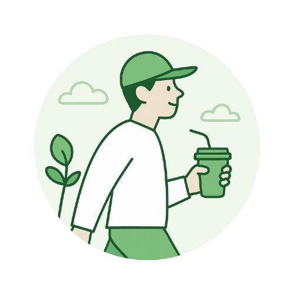

잠깐 멈췄을 때,
비로소 보이는 것들
바쁘게 일하던 사람이 자기만의 속도를 찾아가는 이야기. 쉼도 우리 일의 일부니까요.
각자의 속도로 살아가는 우리의 이야기.

바쁘게 일하던 사람이 자기만의 속도를 찾아가는 이야기. 쉼도 우리 일의 일부니까요.
마실 에디터의 이야기
남의 정답을 따라가던 시간을 지나, 나에게 맞는 일을 묻기 시작했어요.
마실 에디터의 이야기
늘 걷던 길에서 한 블록 벗어났을 뿐인데, 하루의 표정이 달라졌어요.
마실 에디터의 이야기
다시 만나고 싶은 이야기를 모아두세요.
빈 상태 시안마음에 남는 글을 저장하면
여기서 다시 꺼내 읽을 수 있어요.